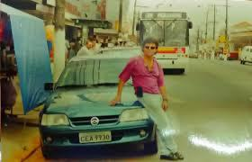
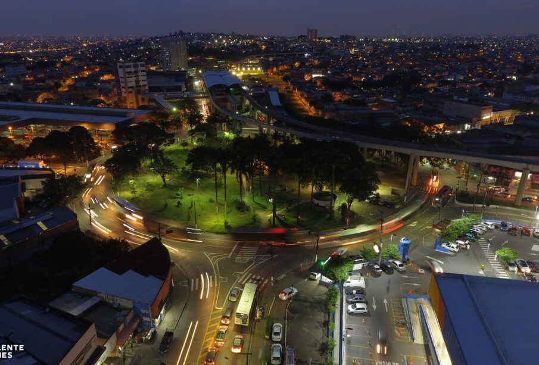

Formação
Início das ocupações e loteamentos que deram origem ao bairro.
Conhecendo São Mateus, Zona Leste de São Paulo.
São Mateus tem uma história marcada pela organização de seus moradores. O bairro cresceu com ocupações e loteamentos populares, e a comunidade se mobilizou por moradia, educação e saúde.
Hoje, organizações comunitárias seguem criando oportunidades e fortalecendo os vínculos no território.
Início das ocupações e loteamentos que deram origem ao bairro.

Surgimento de organizações e movimentos populares.

Mobilização por infraestrutura, educação e saúde.

Fortalecimento de organizações e projetos sociais.

As iniciativas do bairro seguem transformando São Mateus.
Moradores e organizações comunitárias atuam pelo território.
São Mateus fica na Zona Leste de São Paulo.
Projetos culturais e sociais ampliam oportunidades no bairro.